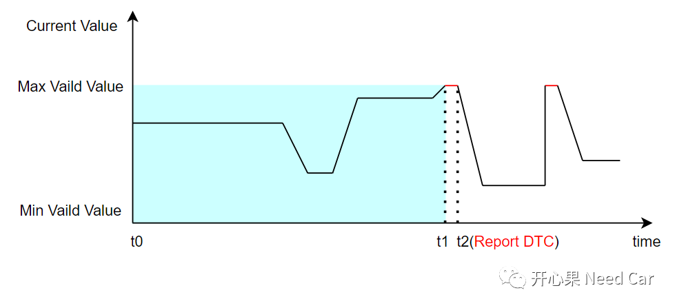
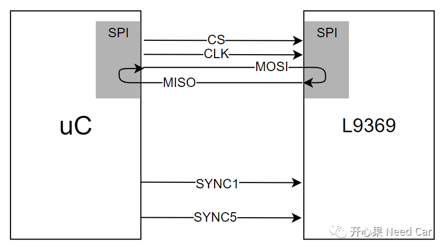
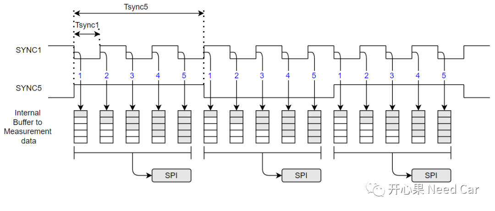
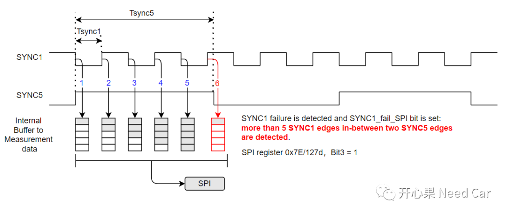
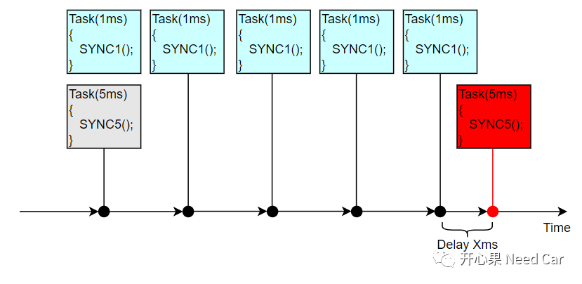
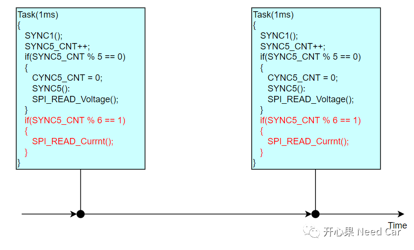
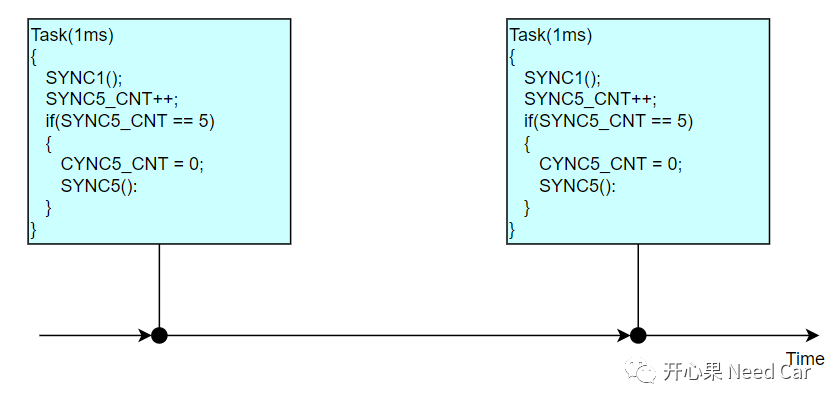
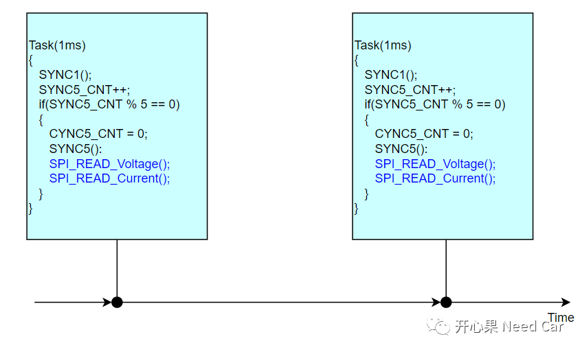

开心果 Need Car · 2022-06-02T12:52:00+08:00 · 微信原文
本文聚焦同步(Synchronization)时机不准引发的工程问题：DTC上报、电流值采样不准。
上层获取（SWC）底层（BSW）采集的电流信号值时，电流值值达到最大（实际未有达到最大），硬件检测采样过程异常，上报DTC，且EPB无法工作。
问题示意如下：

1、电流采样原理

1、上报DTC原因


触发SYNC5边沿时，超过了预期的5ms，导致两个SYNC5边沿时间内触发了6次SYNC1。因为两个SYNC5边沿时间内，检测出超过5次SYNC1边沿反转，L9369的错误状态寄存器就会将对应的故障位置1。之后uC通过SPI读取故障信息，故障确认后，上报对应的DTC。
一个SYNC5时间内，为什么会触发6次SYNC1呢？
问题代码中，SYNC1和SYNC5的处理逻辑如下所示：

SYNC1的触发动作在1ms 的Task中执行，SYNC5的触发在5ms的Task中，且两个任务在不同的Core中，两者的执行属于异步行为，所以两者的同步时机不一致。同时，SYNC5所在的任务可能存在某种原因导致任务延迟X ms执行，两个任务的同步时机也会不一致，所以使得两个SYNC5边沿时间内，可能会触发6次SYNC1边沿反转。
2、电流采样不准原因
问题代码中，电流值的采样周期为6ms，而手册中SYNC5的更新周期是5ms，且SPI的最多可以缓存50个数据（所有采样数据共用），由于数据没有及时读取，导致部分电流值被覆盖，进而导致电流值不准。问题代码示意如下所示：

1、DTC问题解决策略
将SYNC1和SYNC5的同步动作放在一个Task中操作，避免两者的同步不一致（SYNC1和SYNC5边沿触发时间差值过大），示例代码如下所示：

此方式确保了每5ms周期，SYNC1和SYNC5在近乎相同的时间内完成同步（各自Pin脚反转）。
2、电流值采样不准解决策略
读取电流值的操作在5ms的Task中执行，与SYNC5执行周期(5ms)保持匹配，示例代码如下所示：

往期精彩回顾